Introduction
Thank you for purchasing our theme. If you have any questions that are beyond the scope of this help file, You can asking on the support forum after you sign up with your purchased code. Thanks so much!
Support Forums
Any questions that are beyond the scope of this help file, asking on support forum
Visit Support ForumFollow Us
Follow us on ThemeForest and don't miss our new upcoming premium themes.
Follow on ThemeForestRate Theme & Support
If you like our theme or support, please rate on ThemeForest in your download page.
Rate on ThemeForestGetting Started
If you are first time to use WordPress, I think maybe you need to read the offical documentation for how to use WordPress, click here to read it.
About WordPress installation, you should download the latest version of WordPress code from WordPress.org, then upload all the WordPress files to your webhost(Some webhost is provide one-click installation, e.g. Bluehost), then, visit your website with your IP address or domain name, fill the MY SQL and Administrator information step by step. You can refer to the following Video:
Also, there are many useful How-to videos in WordPress.tv
Theme Installation
Unzip the downloaded package. Find the zipped theme file called MagicBook_theme.zip.
Go to "Appearance > Themes" in your dashboard side menu. Click “Install Themes” tab and upload the zipped theme file. Activate it after uploading is finished.
You can also upload the theme to "/wp-content/themes" directory via FTP client.
Initialization
After you active the theme, you will find the default homepage is a standard blogroll page, you can enable the book template for the homepage in "MagicBook Options > General Setting", after you do that, please continue to finish the following steps.
First of all, you must select "The latest posts" option in "Setting > Reading" to make the book works properly.
1. Install the required plugins
You will see a notifiction message on the top of the page (like below), please install and active the required plugins like Visual Composer, Gallery Metabox. Please note, This theme is completely depend on the Visual Composer plugin, or you can't manage to edit the pages, so please do remember you must install and visual composer at least!
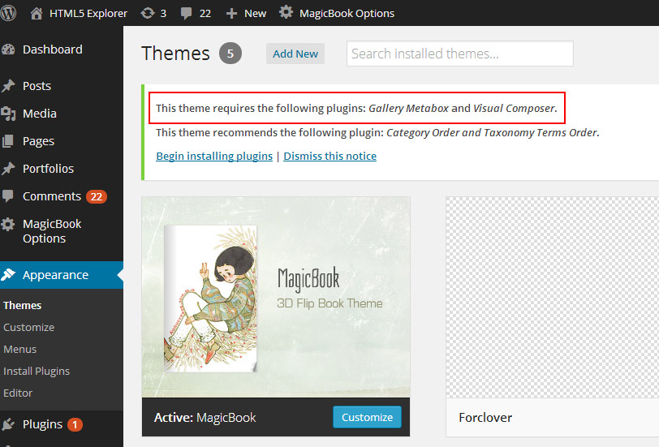
2. How to organize the book pages?
I can't wait to tell you that it's very easy to do. Let's go!
1) Just add some pages first. After you actived the theme, you will find we have already create an example page for you, you will know how to manage the page when you edit this page, see below.
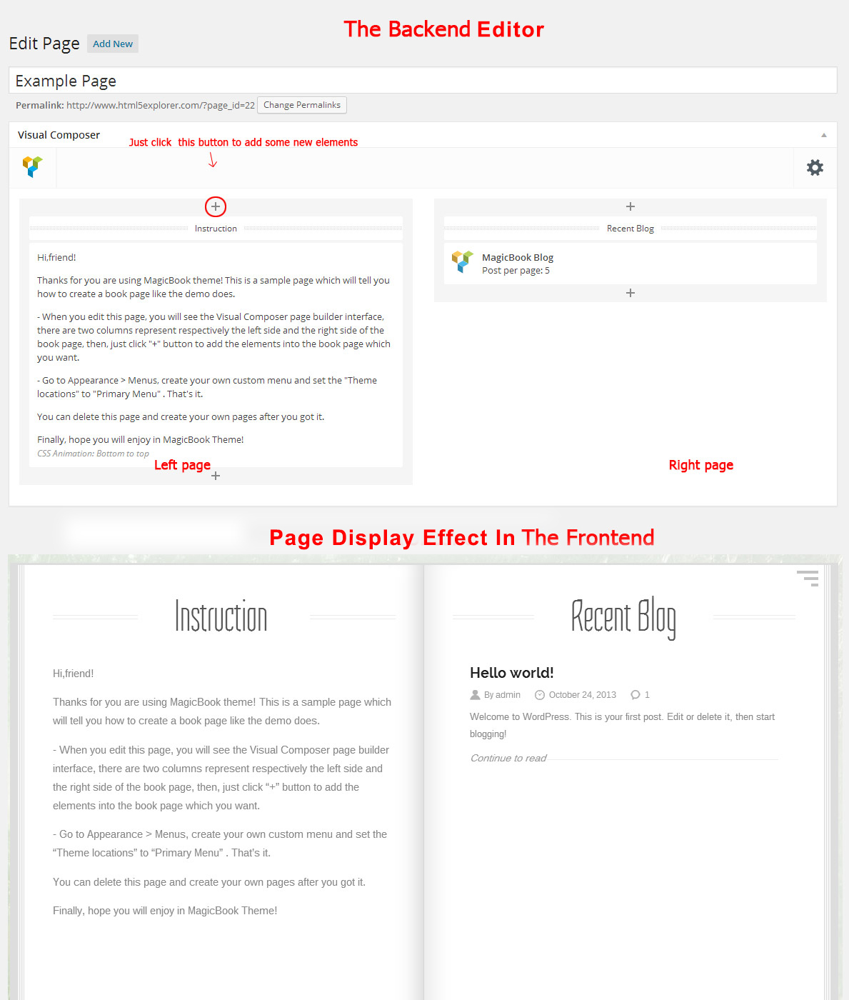
As you can see, the backend interface has two columns edit area, they respectively represented the left page and the right page which is in the frontend. You can click "+" button to add some new elements into the page. More details about Visual Composer usage, you can refer to the plugin documentation, please click here.
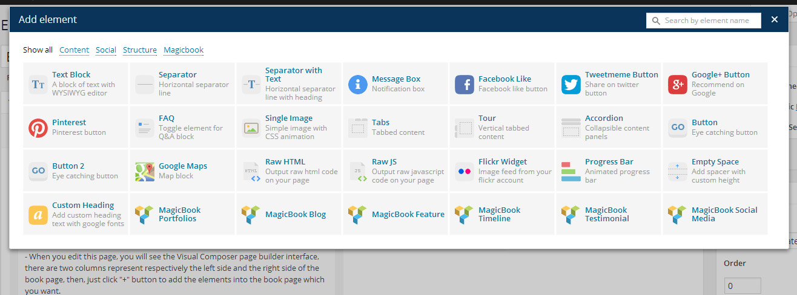
2) After you add some pages, just go to Appearance > Menus, create a new custom menu and set it to the primary menu, add those pages into this menu, refer to the following picture.
{kind=link}
Then, the Initialization is finished! You can also custom the book cover, page background image and etc in MagicBook Options.
Dummy Data
If you are newbie and unfamiliar to use this theme, you can import the dummy data which is included in the download package.
Go to Appearance > Import Demo Data, select a demo and click the import data, waiting for a few minutes until the demo files and data imported.
That's it! Is it so easy?
Page Templates
In default cases, this is an one page site actually, so for some reason, if you want to create a portfolio archive page or blog archive page separately, you can select the page template from the Page Attributes box.
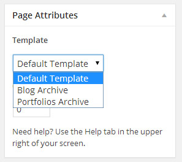
How to use the page template?
Just create a new page, select the page template in page attribute area, leave the page content empty, save the page, that's it! Please note, as I said above, these page will not a part of the book, they will show up separately.
Portfolios
There are four formats for portfolio post(Image,Video,Audio), when you add a new portfolio post, you will find Portfolio setting Panel below the editor.
Create image gallery
Please select "image" for the portfolio type option.
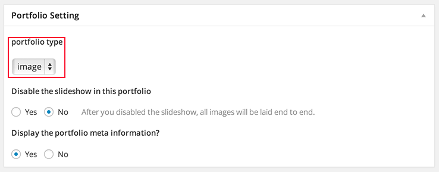
Then, you will see the gallery section appeared below the portfolio setting panel. Please note, you must install and active Gallery metabox plugin when you initialize the theme(See here).
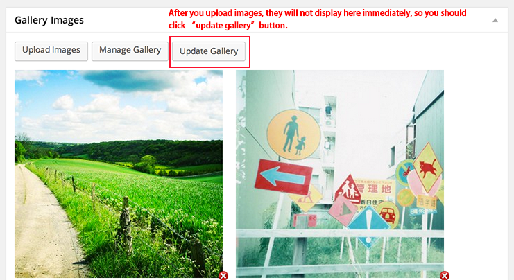
Add Audio or Video portfolio
Please select "image" for the portfolio type option, you will see the embed code field appeared, just put the codes you get from youtube/vimeo or soundcloud into this field.
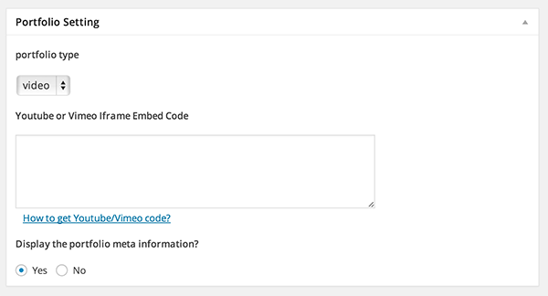
Visual Composer
Visual Composer is a powerful page builder plugin developed by mixey. If you have any questions about using this plugin, you can ask the plugin author here, but don't forget to tell the author you have purchased "MagicBook" theme which is integrated Visual Composer with Extend License.
For basic using, you can watch this video:
You can also refer their online documentation here: http://kb.wpbakery.com/index.php?title=Visual_Composer
Customization
You can change the big heading font in Appearance > Customize, we will provide more customize options here.
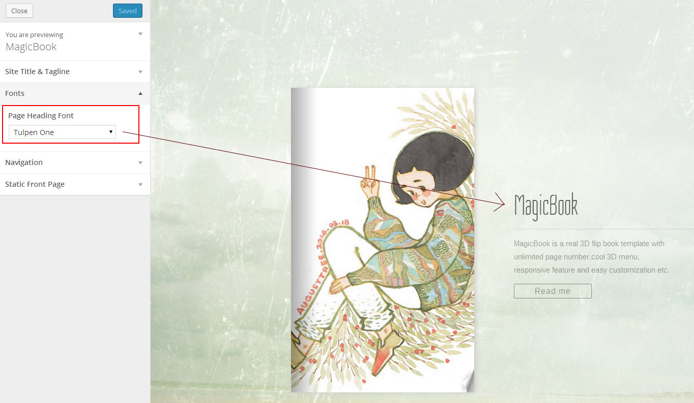
-
- Secondary development
If you are going to secondary developing, please don't modify the source code of the theme, you'd better create a child theme, or add your custom CSS/javascript in "MagicBook Options > Custom Code > Custom CSS(or Custom Javascript)", it will not conflict with the future upgrading, otherwise, you can't upgrade your theme smoothly.
For how to create a child theme, you can refer to the following offical documentation, http://codex.wordpress.org/Child_Themes. Also, our support service is not include helping user to create a child theme, but we would like to answer your questions about the php function, file structure or CSS.
Useful Tip: How to find the CSS selector and use the new CSS to override the original styles?
Generally, you can find the CSS selector with Chrome developer tool or Firebug in Firefox. You can refer to this article for how to use Chrome developer tool http://dailypost.wordpress.com/2013/07/25/css-selectors/
-
- Support Service
If you want to deep customize the theme or secondary develop, unfortunately, we are not provide customization service, the support service is only include fixing bug and trouble using. Maybe you can look for a freelancer developer on http://studio.envato.com/ or http://freelancer.com
Localization
This theme is ready for localization. We have made every string translate able with the text domain "MagicBook", use Poedit editor to translate it.
For how to create your own language file, please do it as following steps
- Go to /wp-content/themes/MagicBook/languages directory, you will find the en_US.po file
- Just copy this file and rename the file in format language.po (ie. pt_BR.po, de_DE.po, etc.)
- Then, just open this file with Poedit editor, translate all words to your language, save the file.
- Go to "Setting > General > Site language", you will find the language options at the bottom, select your language.
Upgrade
Every times when we release the new version, you need to know how to upgrade the theme. Generally, if you haven't modified any source files of the theme, just remove the old version and reinstall the new version directly, if you have changed some source files, you can't reinstall the new theme, it's hard to upgrade, you must move all your changes to the new theme before you reinstall or override the old files.
FAQ
- How can I reduce the font size of heading like below?
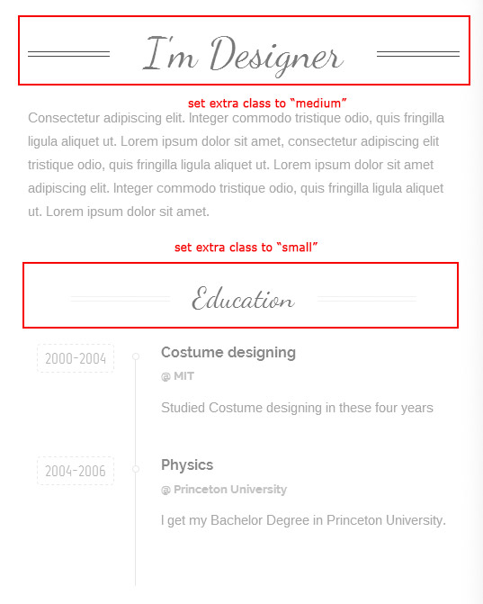
Answer: Just set the extra class to "medium" or "small" in "Separator with text" block.
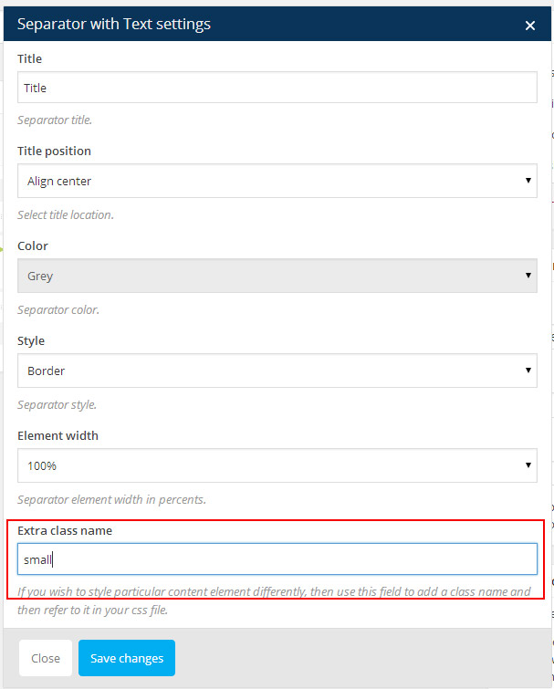
- How can I make the single image full of the whole page like the demo?
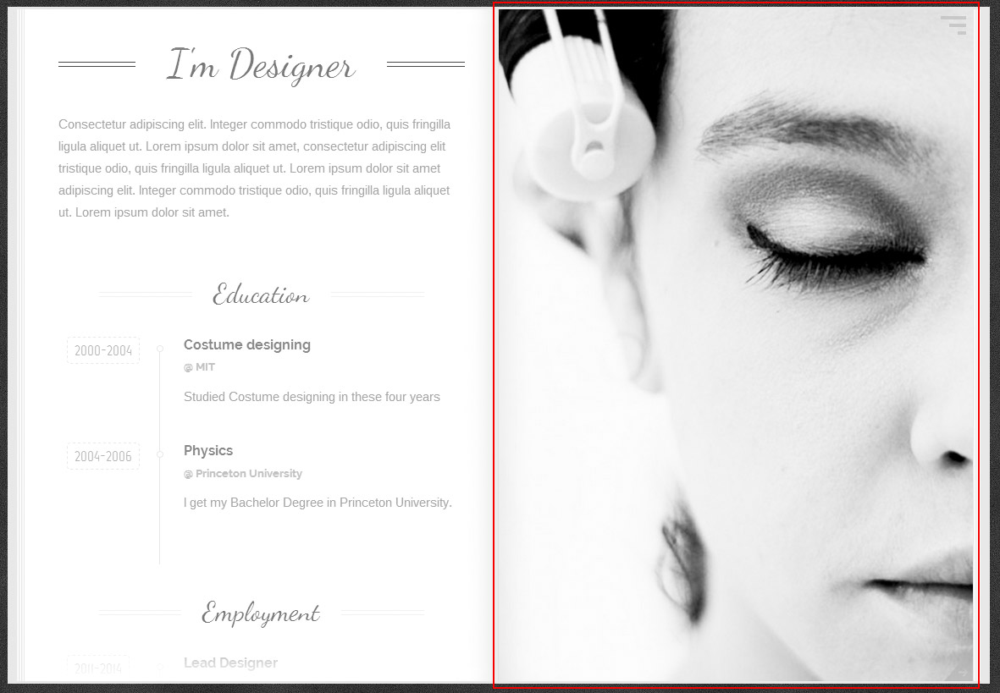
Answer: Just set the extra class to "cover" in "Single image" block.
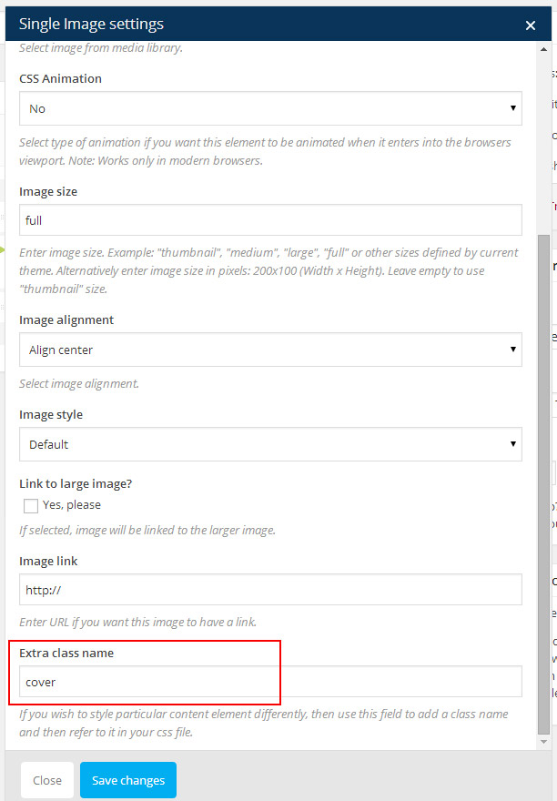
Credits
thanks all creator of these great files
- jQuery
- Isotope
- Fonts by Google Webfonts
- HTML5 Shiv
- Flexslider
- Modernizr
- Basic jQuery Slider
- Bookblock
- colorbox
- Placeholder
- Perfect Scrollbar
- Mouse Wheel
- Easing
- WordPress
- Visual Composer
- Redux Framework
- Gallery Metabox
All pictures in the demo site is from Flickr.com, view the picture credits.